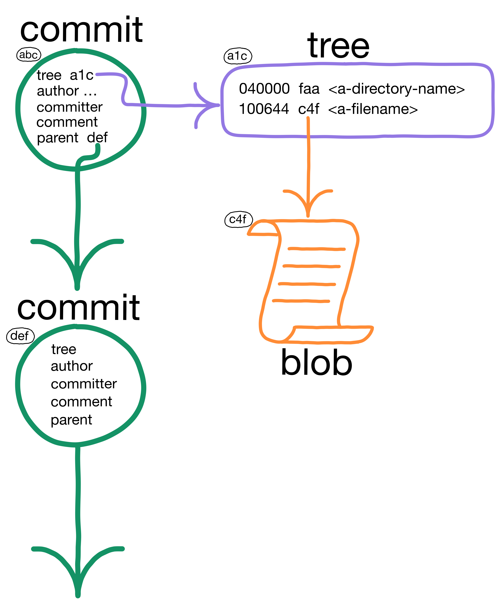
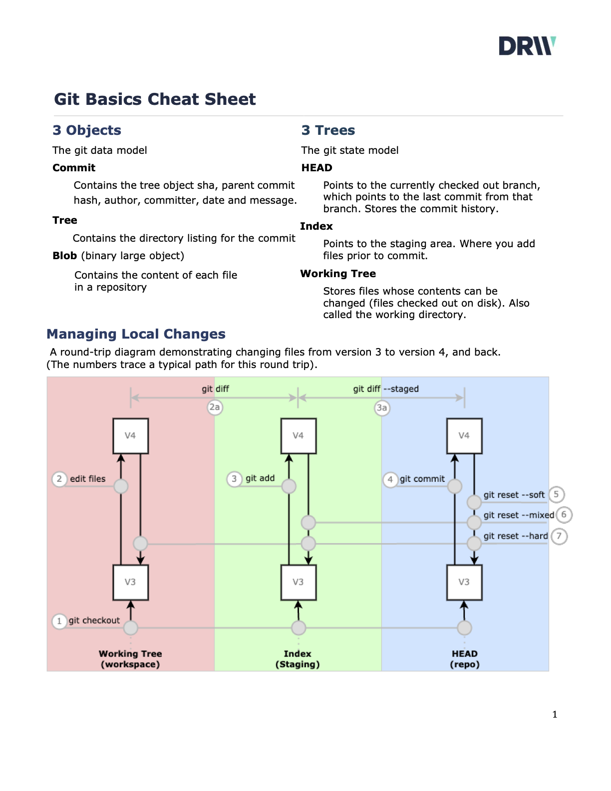
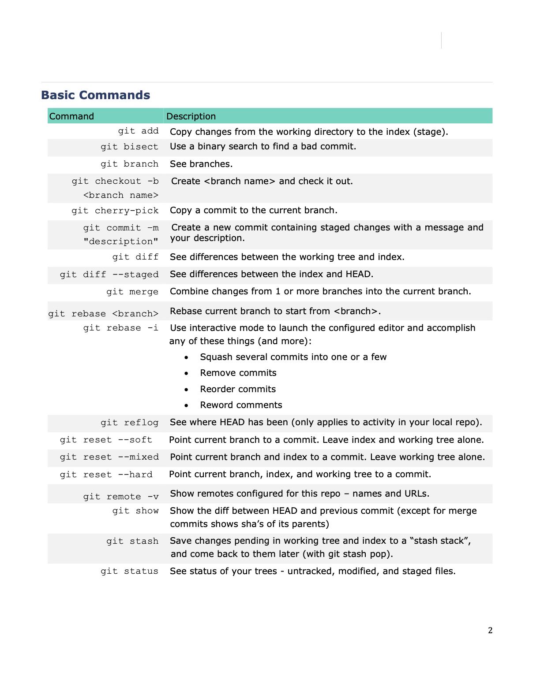
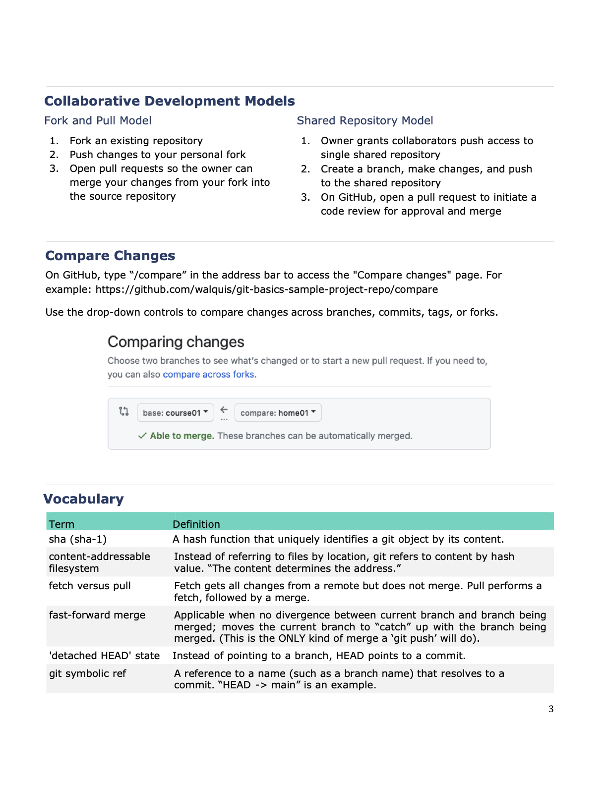
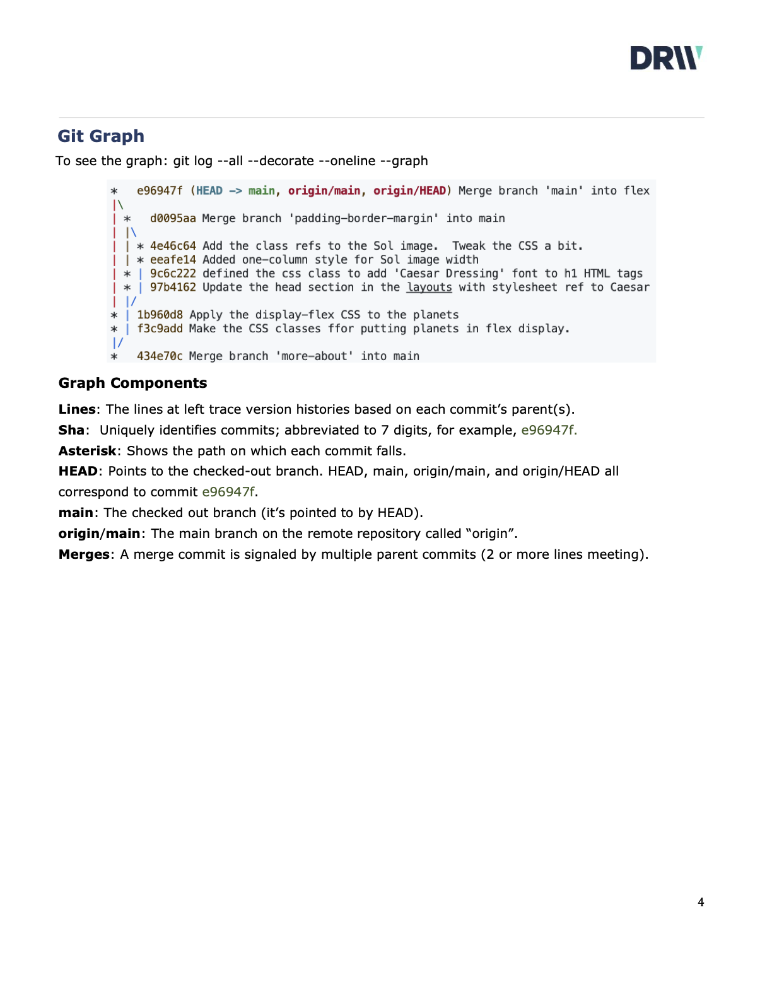

Collaborating with git

Overview
Unlike Cueball, your team will learn git well enough to collaborate effectively with it! In this two-session hands-on course, you will work as a team to build a simple static website, laying a foundation for communicating about code in a professional development environment.
You will build confidence and practical skills with git through hands-on work with The Three Objects1 of git's data model -- moving them around The Three Trees2 of git's state model.
You will learn to use Pull Requests (aka PR's) to communicate changes to your team for review and integration into the team's shared work stream.
In the course of a collaborative software development project, you will run various git commands in a Bash shell to examine and change the state of git objects in these trees on your local machine. Some of these commands may be familiar (e.g., git checkout, git add, git commit, git status, git diff) and some may not (git reset, git diff --staged, git rebase, git cherry-pick).
Another major theme is workflows. We will learn and practice some Common Git Workflows, especially those built around Pull Requests, as you build your site. For instance, as your team begins to deliver code, you will encounter challenges (merge conflicts!) inherent to concurrent work on a shared code base, and you will practice using git's and Github's features to resolve them.
Your team will collaborate by working concurrently on changes and delivering to main, aiming toward making your site look more or less like index.html in the sample repo.3
Coding will be kept simple to allow you to focus on git skills; you and your team will modify static HTML and CSS files. The only "webserver" is your local filesystem.
Keep your website viable as you deliver each change to main. Don't "break the build"!
By the end of our time, we'll have substantially covered the topics in the Course Syllabus.
About the instructor
As a devops professional with three-ish decades of experience in version control, I first experienced git in 2009 when our developers insisted on bringing it into the company. I learned a few basic survival commands, but it wasn't really clicking for me. Depressingly often for a version control "expert", I got out of my depth and had to be rescued.
Eventually I tired of memorizing magic spells and decided to buckle down and learn the basics of git. Suddenly, git started making sense😮! That feeling of enlightenment, along with the big boost in my productivity, helped inspire this course.
I've presented some variation of this material to every CodePlatoon cohort since Bravo. Equipped with a firm grasp of these git fundamentals, graduates have reported that they have become go-to resources for git in their software teams.
The three objects are commit, tree, and blob
The three trees are working tree, index, and HEAD
You can't view the rendered index.html directly from Github, which only shows the HTML source. View it by cloning the sample repo and opening index.html in your browser (via "File --> Open File...").
Syllabus for Collaborating with git
Goals
- Read a repo's commit graph, and use git commands confidently to make it look like you want.
- Clearly and efficiently communicate changes with your team using git commands, and Github workflow tools such as Pull Requests.
- Capably manage the state of your local changes using basic git commands such as
git add,git commit, andgit resetto move them among The Three Trees. - When using git commands in real-life scenarios, know their effects in terms of The Three Objects of git's data model.
- Make changes confidently, knowing specifically how git has your back with commands such as
git reflog.
Objectives
By the end of this course, students will be able to...
Demonstrate these skills:
- Use Pull Requests to deliver changes for review by one or more members of your team
- Work as a team to deliver changes to a chosen remote and branch
- Manage commits with
git resetandgit rebase- including undo, modify, move operations - Resolve merge collisions
- Stash work and return to it
Explain these terms and concepts:
- sha
- content-addressable filesystem
- blob, tree, commit
- working tree, index, HEAD
- symbolic ref
- branch
- remote
- fetch vs. pull
- fast-forward merge
- 'detached HEAD' state
Use these commands, and understand them in terms of the 3 objects/3 trees:
- git add
- git status
- git diff [--staged]
- git show
- git commit
- git reset [--soft, --mixed, --hard ]
- git branch
- git merge
- git stash - "I need to save what I'm working on and come back to it later"
- git cherry-pick
- git rebase -i - clean up commit history before pushing
- (stretch goal) git bisect - find a bad commit
Identify and explain these components of a repo graph (as seen with "git log --all --decorate --oneline --graph"):
- HEAD
- main
- origin/main
- shas
- the lines along the left side
- branch/merge points
Three Objects
Git is a brilliantly simple data model surrounded by a dense constellation of commands and options. Once you know the model, you know how the graph should look. Then you are equipped to find the command that does want you want.
Git Objects at git-scm.com is good reading.
- Commit and its attributes
- Tree and its attributes
- Blob and its attributes
Three Trees
The word "reset" is loaded with many connotations. In a git context, you can read git reset as "set-current-branch-to-an-existing-commit". We'll explore how this works for managing local changes.
git-scm.com's Reset Demystified is also good reading.
These are the three trees:
- HEAD - pointer to the current branch, which points to a commit
- Index - the place you add to; the staging area for commits
- __Working Tree - the files checked out on disk (not including the git repo itself - that would be too meta)
Prework (For Non-Developers)
If Version Control, Git and the Bash shell are all new to you, start with this page.
From here, the next step is Prework - For All Students.
Bash
Watch Hallden. "Linux Commands You Need to Know" - 12 minutes. Can probly put it on 2x playback without missing much. Keep an eye out for these commands:
lsand its '-l', '-a', '-r', and '-t' optionscd- change directorymkdir- 'make directory'pwd- print working directoryrmand its-rand-foptions. Alsormdir.mv- move files/dirscp- copy files
Not in this video, but worth knowing:
grep- 'get regular expression and print' - very powerful, esp. with-r,-i, and/or-lcat- 'concatenate' - see file contents
Also, these key concepts are essential to Linux:
- Environment Variables, especially the
PATHenvironment variable. - Standard Input (STDIN), Standard Output (STDOUT), Standard Error (STDERR)
- Pipes (that is, the vertical bar,
|) and I/O Redirection (e.g.,<,>,<<,>>,2>&1). - Shell config files:
.bash_profileand.bashrc(for the Bash shell).
A summary of commands covered in the above videos is here.
Why version control, and why Git
- Watch Colt Steele. "Learn Git in 15 minutes" - comes with a transcript and covers the right stuff in the terminal.
- Watch Fireship Learning. "Git it? How to use Git and Github" - 12 minutes. Covers the right stuff and does it in vscode in the terminal. A bonus is that it shows the fork / clone idea, which will be used in Git Basics.
Overview of the website
This course works with source files for a static website--"static", meaning no Javascript code is involved. In this case, neither are there any build processes nor templates nor frameworks. There are only HTML files, a styles.css file, and a handful of images.
That said, even a simple static site provides plenty of complexity for exercising collaboration. For instance, suppose two teammates each add a menu link to index.html. One adds a link to "help", and the other adds a link to "faq". When they attempt to push their changes, not only will a merge be required, but a merge conflict will almost certainly result, and need resolving.
The starter repo has these files:
.
├── about.html
├── bin
│ ├── append-aliases-to-profile.sh
│ └── git-aliases.sh
├── faq.html
├── help.html
├── images
│ ├── earth.jpg
│ ├── mars.jpg
│ ├── mercury.jpg
│ ├── solar-system-subway-map-ulysse-carion.png
│ ├── sun-coronal-mass-ejection.jpg
│ └── venus.jpg
├── index.html
├── map.html
├── .gitignore
└── styles.css
- The five HTML files each correspond to a page on the website:
index.html(the home page),about.html,faq.html,help.html, andmap.html. - The
images/directory contains images that you'll later reference with<img>tags. - The
styles.cssfile isn't used yet; you'll be directed to add it toindex.html, something like this, to change the look of the website. - The
bindirectory is not part of the website, but contains useful git command shortcuts we'll use during the course. .gitignoreis also not part of the website (and not visible unless you usels -a).
Outline of Prework-for-non-devs Videos
Hallden. "Linux Commands You Need to Know"
Eight basic commands
ls
[autocomplete with tab]
ls *.txt
ls -al
cd Desktop
cd
cd ..
mkdir Desktop/folder
pwd
touch Desktop/hello.txt
rm (and rmdir)
mv myfile Documents/
cp Documents/myfile.txt Downloads
Colt Steele. "Learn Git in 15 minutes"
- repos - local, remote
git init
ls -a
git status
touch index.html
# Getting changes into git is 2-stage:
git add index.html
git commit -m "commit message"
git log
touch app.js
touch styles.css
# Edit index.html, app.js and styles.css
git add index.html
git commit -m "add app logic"
git add .
git commit -m "add basics styles"
# Edit styles.css
git add styles.css
git commit -m "change bg color on body"
git checkout [hash]
branch - timeline of commits
(* says HEAD detached)
git checkout master
git branch crazycolors
git checkout crazycolors
[edit files]
git add .
git commit -m "add animated bg"
git checkout master
git merge crazycolors
Fireship Learning. "Git it? How to use Git and Github"
A series of small milestones
-
create multiple branches
-
The GitLens plugin for vscode
git init
touch .gitignore - or use VSCode plugin to generate one
git add .
git reset --hard
# Make many small commits
git add .
git commit -m " ... "
git branch
git checkout -b feature
# "back to original state on the master" ???
git stash
git stash pop OR git stash apply
git checkout master
git merge feature
git merge feature --squash
# "It won't actually change the head commit on the master branch,
# so you'll need to add an additional commit on your own that says
# something like 'merged in feature branch' "
# (Huh?? He should probly use 'git rebase -i' instead)
git remote add origin
git push origin master
Prework for the Git Basics Course
This course assumes you have ...
- A GitHub account.
- Visual Studio Code installed.
- Access to some sort of bash shell: On MacOSX, Terminal.app; on Windows, it would be Windows Subsystem for Linux or Git For Windows.
- At least some familiarity with a Linux shell. If not, take a look at Prework for Non-Developers.
This prework introduces the concepts you'll cover in the 2-session course, and also takes you on a tour of the website you'll build collaboratively using git.
You'll do some git environment setup, install the Git Graph plugin, and familiarize yourself with Git Graph.
Next, you'll take a quick look at the website, to see what kind of coding we'll be doing to exercise our new git collaboration skills.
Finally, you'll do some work at the command line to introduce you to the git commands and concepts that we'll cover in more depth during the class.
Start the Prework
Git Environment Setup
We'll examine two repos:
- A sample of the "Solar System" website.
- A "starter" repo for that website. (You'll delete it after this prework, and then re-clone a copy from your team lead's fork when class starts).
Run these commands in your Terminal.app or Git bash:
git config --global pull.rebase false # Tell git what to do when pulling
git config --global core.editor "code --wait" # Set your git editor to vscode
cd # Start from your home directory
mkdir src
cd src # Or, cd to wherever you keep code projects
# Although you won't be committing anything to it,
# you'll use this sample repo as a reference...
#
git clone https://github.com/walquis/git-basics-sample-project-repo
# A "starter" repo of the website. You'll delete it after this prework,
# and then re-clone from your team lead's fork when class starts).
#
git clone https://github.com/walquis/git-basics-starter-repo
# Add some handy aliases to your current shell.
#
cd git-basics-starter-repo
source bin/git-aliases.sh
# Test that the 'adog' alias works...
#
adog
* 2dd739a (HEAD -> main, origin/main, origin/HEAD) Some handy git aliases, and an initial .gitignore
* 4ca41a7 Initial commit
Install the GitGraph plugin in your VSCode
Visit the GitGraph Plugin Install page and follow the install instructions.
(NOTE: If you're using PyCharm, you can skip this step; git integration is built-in. Or if you like, PyCharm also has plugins like Git Machete for enhancing git integration.)
Explore the sample website's code and repo history
This repo records the work of a hypothetical five-member team: Ned, Nykhia, Dex, Deja, and Xavier.
Open index.html to view the website in the git-basics-sample-project-repo that you cloned: Choose "File --> Open File..." in your browser, navigate to index.html and open it. You should see something like this...

(You could also view it with a Live Server extension in VSCode).
Point VSCode at the git-basics-sample-project-repo directory, and look at the history with GitGraph:

Orientation on project's starter code
You'll practice your git skills by developing a simple website collaboratively.
During the prework, in Git Environment Setup, you cloned a couple of repos:
- A sample of the "Solar System" website: https://github.com/walquis/git-basics-sample-project-repo.
- A "starter" repo for that website: https://github.com/walquis/git-basics-starter-repo.
The starter repo has these resources:
- Initial versions of
index.html,faq.html,about.html,help.html, andmap.html. - A folder with images (notice that they are not yet used in the starter website's code).
- CSS files (similarly, they are not yet used).
The starter repo's index.html has the beginnings of a menu, but it's incomplete.
Feel free to compare the code in each repo to get a better idea of what work needs to be done. For instance, open each repo's index.html in your browser, via "File --> Open File...".
Also, open each repo in Visual Studio Code, and look at the code.
When your team gets going, you'll break the work into tasks to build out the starter repo so it looks something like the sample website.
NOTE: For now, during this prework, you'll make changes locally in this copy of git-basics-starter-repo, and then delete the entire repo1. When the class starts, your team lead will fork git-basics-starter-repoz into their Github account (calling it something like solar-system), and you'll re-clone the repo from your team lead's fork.
1 Or, copy it elsewhere if you'd like to keep it.
Command-line Exercises
You'll briefly cover these topics:
git reset- branching
- Merging (with no conflicts)
- Merging (where you handle a merge conflict)
Preflight Check:
Make sure adog works on your *nix command line (adog is the alias you established during "Set Up Git Environment").
cd into your git-basics-starter-repo and run adog. You should see something like this:
cd git-basics-starter-repo
adog
* 2dd739a (HEAD -> main, origin/main) Some handy git aliases, and an initial .gitignore
* 4ca41a7 Initial commit
If not, set the alias with this command and try adog again:
alias adog='git log --all --decorate --oneline --graph'
adog
Get Started!
What's Next?
Once you've worked through these exercises, you should be ready for the class!
Feel free to take a look at the syllabus.
If you want to do more before class starts, Reset Demystified is a useful deep dive.
The Three Trees and git reset
(excerpted from the Objects and Trees Exercise).
Git manages your local changes using three trees: HEAD, Index, and Working Tree.
| Tree | Role |
|---|---|
| HEAD | The latest commit |
| Index | The commit-in-progress, aka "staging" |
| Working Tree | Your local filesystem (except for the .git directory itself |
On the 'green path' (that is, no mistakes or side journeys), changes start in the working tree and flow to the index (aka "staging area" via git add, and finally into the repo's commit history via git commit (i.e., the branch to which HEAD points moves to the next commit):
| Tree: | Working Tree | Index | HEAD |
|---|---|---|---|
| Operation: | 1. <make changes> | 2. git add (stage changes) | 3. git commit |
(Note that HEAD typically points to a branch name, not directly to a commit--this is what it means to be "checked out" on a branch. So when git reset is used to move HEAD, it actually moves the branch to which HEAD points).
See also this workflow diagram from git-scm.com. Notice that a git checkout updates all three trees:

Sometimes it's necessary to move changes the other way. For instance, you may want to...
- Add a forgotten file,
- Change a commit message, or
- Revert a commit.
The git reset can assist with all this and more.
Why is it called "reset"? Possibly because it resets trees to a state that already exists in the repo.
git reset needs to know two things:
- The "hardness"--that is, how many trees are to be reset, and
- Which commit SHA to (re)set the tree(s) to.
If you just type "git reset", the default hardness is "--mixed", and the default commit SHA is HEAD.
| Tree | Role | git reset "hardness"needed to move the tree |
|---|---|---|
| HEAD | The latest commit | --soft |
| Index | The commit-in-progress | --mixed (also moves HEAD.) The default. |
| Working Tree | Your local filesystem | --hard (also moves HEAD and Index.) |
Another picture of how "git reset --soft/mixed/hard <ToThisCommit>" works
| "hardness" | Trees that are reset <ToThisCommit> | ||
|---|---|---|---|
| Working Tree | Index | HEAD | |
| --soft | - | - | YES |
| --mixed | - | YES | YES |
| --hard | YES | YES | YES |
Moving Objects Among Trees
Let's move a single file through this workflow, starting with working-tree changes, which will move into the index, and then into a commit. Then, we'll revert it, tree by tree, all the way back using git reset.
1. Move a change forward through the trees
Make a change (which tree are you working in now, as you run the following commands?) such as adding a menu item link...
code index.html # (or whatever file you may have in your working tree)
# Make a minor change to index.html in your editor, and save it. Then...
git status # or use the 'gs' alias
git diff # or use the 'gd' alias
Add to the index.
git add index.html # or 'ga' aFile.txt
git status
git diff
git diff --staged # or use the 'gds' alias
Which tree (or trees) have the change now?
Commit it...
git rev-parse HEAD
git commit -m "Added item to menu in index.html" # or use the 'gc' alias: gc -m "Added..."
git status
Now which tree (or trees) have the change?
2. Move the same change backward through the trees
Recall that besides specifying "hardness", we need to tell git reset the commit-SHA to align with--that is, which SHA to reset to.
(What is the previous value of HEAD?)
git rev-parse HEAD
git reset
git rev-parse HEAD # What happened? Why?
git rev-parse HEAD^ # What does the caret (^) mean?*
git status
git reset --soft <previous-value-of-head>
git rev-parse HEAD
git status
git diff
git diff --staged
* To understand ^, ~, @{push}, and other revision notation, see Git Revisions.
What happened? What is git status telling you, and why?
What happened to the commit that we were on before doing a `git reset```? How might we get back to it?
Now the branch that HEAD points to has been "reset", back to where it was before we committed. Which tree has changed?
Let's change the next tree...
git reset # Same command, but now something happened. Why?
git status
git diff
git diff --staged
What changed this time?
Let's change the third tree...
git reset --hard
git status
git diff
git diff --staged
Test your understanding:
- What happened to each tree at each step?
- How is
git reset <paths>the opposite of `git add```? - When would each variation of
git resetcome in handy?
Branching
Checkout a new branch, mybranch. Make change to index.html.
cd git-basics-starter-repo
adog
git branch # See which branch i'm on (how could I tell from adog output?)
git checkout -b mybranch # Make a new branch (-b) and checkout to it.
adog # Note mybranch in the graph. How do I know it's my current branch?
code index.html # Open index.html in VSCode
Let's reformat the HTML source code for the menu to be more readable. Change it from this:
<a href="./index.html">Home</a> <a href="./help.html">Help</a>
... to this:
<a href="./index.html">Home</a>
<a href="./help.html">Help</a>
Save the file. Now git add and git commit...
adog # Check how the graph looks.
git diff # What am I about to add to the index?
git add index.html
adog # Check how the graph looks. Has it changed?
git diff --staged # What am I about to commit to git?
git diff # Why does this show no differences?
git commit -m "each menu item on a separate line in the code"
adog # Check how the graph looks. How about now?
The git graph should now look something like this:
adog
* ccaf82c (HEAD -> mybranch) each menu item on a separate line in the code
* 2dd739a (origin/main, main) Some handy git aliases, and an initial .gitignore
* 4ca41a7 Initial commit
🤔 Your commit will have a different hash code, or SHA, than ccaf82c. Why might that be? ("The Three Objects" explains).
Some Key Takeaways:
- Use
adog,git status,git diff, andgit diff --stagedconstantly. git diffshows differences between working tree and index.git diff --stagedshows differences between index and HEAD.- Although
git branch mybranchcreatesmybranch, it doesn't checkout to it (that is,HEADis not pointed atmybranch).
Merging - without a merge conflict
You've just made a mybranch branch and then made it your current branch with git checkout, so that HEAD points to it.
Now you'll go back to main to make a change, so that its history diverges from mybranch, and merge the changes back into main.
Change help.html. You can change anything in help.html that you want (even to changing the menu in the same way you did with index.html). Since it's not the same file, it won't result in a merge conflict.
git branch # Check which branch I'm on. My current branch will have a star (*) next to it.
git checkout main
code help.html # A different file than `mybranch`, for a non-conflicting change.
Save help.html. Now git add and git commit...
adog # Check how the graph looks.
git diff # What am I about to add to the index?
git add help.html
adog # Check how the graph looks. Has it changed?
git diff --staged # What am I about to commit to git?
git diff # Why does this show no differences?
git commit -m "each menu item on a separate line in the code (for help.html)"
adog # Check how the graph looks. How about now?
The git graph should now look something like this. Notice mybranch's history diverges from main's:
adog
* f7295ef (HEAD -> main) each menu item on a separate line in the code (for help.html)
| * ccaf82c (mybranch) each menu item on a separate line in the code
|/
* 2dd739a (origin/main) Some handy git aliases, and an initial .gitignore
* 4ca41a7 Initial commit
Let's merge!
git branch # Check that we're on the branch we're merging TO
git merge mybranch -m "merge HTML source menu updates in index.html and help.html"
The git graph shows the merge.
adog
* 686e8db (HEAD -> main) merge HTML source menu updates in index.html and help.html
|\
| * ccaf82c (mybranch) each menu item on a separate line in the code
* | f7295ef each menu item on a separate line in the code (for help.html)
|/
* 2dd739a (origin/main) Some handy git aliases, and an initial .gitignore
* 4ca41a7 Initial commit
Because there were no conflicts, the merge completed without prompting.
Key Takeaways:
- Not all merges result in conflicts.
- The branch you're on is the branch that will be moved to the merge commit.
Merging - with conflict
Let's practice another merge, but now with a change that conflicts.
But first, read up a little on what causes merge conflicts.
Create and checkout a new alsoMyBranch--but start it where main started. You can use several methods to refer to that pont. The following notations all resolve to the same commit:
main^^- two commits before mainHEAD^^- two commits before HEADorigin/main- the commit on which theorigin/maintracking branch sits2dd739a- the shortname of the commit2dd7- an even shorter name--works as long as it's unique2dd739a539c6cc30e9b3cdfa952439ba93c0c392- the full SHA
git checkout -b alsoMyBranch main^^ # Each caret (^) goes back one commit
Now alsoMyBranch exists and sits on 2dd739a, and HEAD is pointing to it; that is, it's your current branch.
Change the menu item source code in index.html like you did on mybranch--but not exactly like you did; let's add another menu item to index.html.
From this...
<a href="./index.html">Home</a> <a href="./help.html">Help</a>
... to this:
<a href="./index.html">Home</a>
<a href="./map.html">Map</a>
<a href="./help.html">Help</a>
Save the file. Now git add and git commit...
adog # Check how the graph looks.
git diff # What am I about to add to the index?
git add index.html
adog # Check how the graph looks. Has it changed?
git diff --staged # What am I about to commit to git?
git diff # Why does this show no differences?
git commit -m "add 'Map' to the menu"
adog # Check how the graph looks. How about now?
The git graph should now look something like this:
adog
* daf0eb2 (HEAD -> alsoMyBranch) add 'Map' to the menu
| * 686e8db (main) merge HTML source menu updates in index.html and help.html
| |\
| | * ccaf82c (mybranch) each menu item on a separate line in the code
| |/
|/|
| * f7295ef each menu item on a separate line in the code (for help.html)
|/
* 2dd739a (origin/main) Some handy git aliases, and an initial .gitignore
* 4ca41a7 Initial commit
Let's merge!
git merge mybranch # Merge mybranch into current branch
Auto-merging index.html
CONFLICT (content): Merge conflict in index.html
Automatic merge failed; fix conflicts and then commit the result.
There it is--the merge conflict. Git doesn't have enough info to know what you want to happen.
At this point, git has placed info about the conflict into index.html, and left it up to you to figure it out. You can view the contents of the file directly, like this:
cat index.html
<html>
<head>
<title>Solar System</title>
</head>
<body>
<h1>The Solar System</h1>
<a href="./index.html">Home</a>
<<<<<<< HEAD
<a href="./map.html">Map</a>
=======
>>>>>>> mybranch
<a href="./help.html">Help</a>
<h1>Hello World!</h1>
</body>
</html>
The changes from your current branch show up between <<<<<<< HEAD and =======.
The changes from the merged-in mybranch show up between ======= and >>>>>>> mybranch.
You can use VSCode to view index.html; VSCode understands the merge-conflict format and decorates your view with buttons to help out.
In this case, you would want both changes: the new 'map.html' link, and the 'help.html' link on a line by itself (which in this case, somewhat non-intuitively, shows up as an empty diff for the merged-in branch).
Click Accept Both Changes in VSCode, or manually delete the delimiters that git added, so that the code looks like this:
<html>
<head>
<title>Solar System</title>
</head>
<body>
<h1>The Solar System</h1>
<a href="./index.html">Home</a>
<a href="./map.html">Map</a>
<a href="./help.html">Help</a>
<h1>Hello World!</h1>
</body>
</html>
Now, tell git about the resolution by doing git add for the file that had the conflict:
git add index.html
And finally, commit it. Git keeps track that you're still merging, so it will make this commit a merge commit--that is, a commit with two parents.
git commit -m "merge 'Map' entry with mybranch"
Key Takeaways:
- You can start a branch from any commit--not necessarily the one you happen to be on.
- You can reference a commit in lots of different ways.
- By definition, merge commits have two or more parents.
- The changes for the branch you're on will show up first in a merge conflict's diff report.
- The changes for the branch being merged into your current branch will show up last in a merge conflict's diff report.
- NOTE: A given merge may have more than one set of conflicts to resolve, even within the same file. Don't assume the first conflict is the only one!
Session One
Has everyone done the Prework?
Setup
- Open your Linux shell.
- Define your project teams.
- Team: Choose a team lead.
- Team Lead: Fork the starter repo. Choose a name for it:
solar-system, for example. - Team Lead: Invite your team as collaborators to
solar-system. - Whole Team, including Team Lead: Clone team lead's repo (do NOT fork it!).
- Run these commands to set up some handy aliases...
cd solar-system
source bin/git-aliases.sh
adog
✅ Checkpoint: Everyone has their team lead's repo cloned (including the team lead).
✅ Checkpoint: Everyone has their aliases working. (Check by running adog as shown above).
Simple Collaborative Git Workflow
"Simple" is everybody working on the main branch...pretty simple, but not the best!
Vocabulary: remote, merge commit, "fast-forward merge"
Commands: git checkout, git checkout -b, git pull, git add, git commit -m, git branch, git push, git fetch, git merge
A basic workflow in the "shared-repository model" of development:
 Click here for a walk-through of this workflow.
Click here for a walk-through of this workflow.
🤔 What is the difference between a merge commit, and a commit that has a merge conflict?
LAB - Simplest Possible Collaborative Git Workflow
- Each teammate: Commit and push at least one non-conflicting change. For instance, each teammate can modify one of these files:
index.html,help.html,about.html,faq.html,map.html.git pushandgit pulluntil all of you have each other's changes and are on the same commit locally.
✅ Checkpoint: Your team is all on the same commit. (Check by running adog and observing which commit HEAD is on).
🤔 Will a given commit always have the same SHA after it has been git push'd or git pull'd? Why or why not?
Walk-through of Simple Workflow
This sequence represents a workflow where my teammate first makes a change locally and pushes. I also make a change locally--but now I must integrate their change (via a git pull origin main) before I too can push.
Click into each step to view the details.
(Note that the steps are arranged such that, once you've clicked on one of them, you can bounce back and forth between them with right and left arrow keys, visually comparing frame-by-frame what happens between steps.)
Step 1 - Everybody checkout main
Step 2 - Teammate commits work

Step 3 - Teammate pushes
Step 4 - I make local changes too
Step 5.1 - I pull (first 1/2 - fetch)

Step 5.2 - I pull (second 1/2 - merge)

Step 6 - I push main to "origin"

When I and my teammates set up to collaborate, we all git clone a shared repo--something like this...
$ git clone https://github.com/org-or-user/the-team-repo # Make local copy of repo
$ git checkout main # Point HEAD at "main", i.e., make "main" my current branch
In this way, we all start with the same understanding of where branch main is--the commit represented by the green circle.
Key Points:
- The origin/main branch, seen in both local repos, is a "tracking branch". git uses it to keep track of where the main branch on the remote called "origin" is pointing.
- As you will see, this tracking is not "live"; no automatic cross-repo notification is happening.
- I have no reason to ever
git checkouta tracking branch. origin/main's value in my repo is updated when I perform certain activities--mainlygit pushandgit pull.

To kick off collaboration, my teammate does some local work worthy of sharing--the commit represented by the pink circle.
Key Points:
git commitis a local-only operation. No communication happens to or from any remote repo.- Because
git commitis local-only, my teammate'smainmoves, but notorigin/main. - Because
git commitis local-only,mainon the remote called "origin" does not move either (at least, not as a result of this teammate's commit. Somebody else could havegit push'd and hence movedmainon the remote, but the teammate won't know about it yet).
Now my teammate shares the work they've committed to main, by pushing to the remote named "origin", with something like this:
$ git push origin main
Key points:
- The pink commit has been copied to the remote named "origin". In general, any commits reachable from
mainare copied over if not already there. - The remote's
mainbranch has been updated to reflect the new work--and correspondingly, my teammate's local origin/main tracking branch is updated as well.1 - Nothing happens in my local repo as a result of my teammate's push.
As we'll see soon, a git pull is a 2-part operation: "fetch" and "merge". A git push is the same 2-part operation, but in the other direction. Moving the main pointer forward on the remote, as is done here,
is an example of that second "merge" part. Because no changes have reached the remote since our teammate last pulled, the main pointer can simply be moved forward; hence, this is called a "fast-forward merge".
This is the only kind of merge possible with a git push.
If there turn out to be changes remotely that we didn't know about, a merge commit (that is, a commit with multiple parents) would be needed. git push doesn't do those, so the git push is rejected and no branches are updated (unless you use --force; but don't do that unless you know exactly what will happen!)
Now I join the picture.
Key points:
- Like my teammate, I've made a local commit after cloning. My commit is represented by the blue-ish circle.
- my origin/main tracking branch has not yet moved, because I've not yet run any commands that reach out to the remote called "origin".

I now pull, by running something like this to see if there are changes to integrate (as indeed there are in this case):
$ git pull origin main
Key Points:
- A
git pullis a two-part operation1. The first part, shown above, is called "fetch", and brings into my repo's DB any commits from the remote that belong to the requested branch and are not already here. - The second part is "merge", which updates my local branch with those changes.
- Essentially, a
git pullcombines these two commands:
$ git fetch origin main # Grab commits associated with current branch, and update tracking branch
$ git merge origin/main # Merge into my current branch from the (now-up-to-date) tracking branch
I can run these explicitly, instead of a git pull; perhaps I want to see what's happened on the remote before I integrate those changes, so I might git fetch and take a look before doing a git merge.
As mentioned earlier, git pull is conceptually a mirror image of git push.

The second half of the git pull is a "merge", shown above. The merge commit is represented by the grayish circle.
Key Points:
- By definition, a merge commit is a commit with two or more parents.
- A merge attempt may result in a conflict; we'll cover conflicts later in this course.
- A merge commit is not created until the merge is complete, whether automatically by git, or manually by resolving merge conflicts.
- It's generally not obvious from a commit graph whether a merge had conflicts.

Now that I've done the work on my local main branch to integrate the changes (via a merge commit), I can push that work on main back to the remote called "origin", like this:
$ git push origin main
Now I'm all caught up, and the remote is caught up.
Key Points:
- Two commits are sent to the remote: My original local commit, and the merge commit.
- My
git pushupdated the remote'smainbranch to reflect my new work. Correspondingly, my local origin/main tracking branch is updated as well. In other words, the same process happened for me when I pushed, as happened for my teammate when they pushed. - As before, my push updates the remote called "origin" (which happens to be Github), but it does NOT update anything in my teammate's repo; that would require explicit activity on their part.
- Now my teammate is behind! That is, their
origin/maintracking branch no longer matchesmainon the remote called "origin". How would they catch up?
Anatomy of a Git Commit, or, "The Three Objects"
Vocabulary: sha, content-addressable, blob, tree, commit
Commands:
git show- What's in the latest commit. See Viewing Repo Changes for more.git reflog- local history of where HEAD has been.git cat-file -p- just for teaching purposes; not part of a normal git workflow
Now that we have some commits, let's take a closer look...

🤔 Is it possible for a commit to have the same SHA as its parent?
LAB - Anatomy of a Git Commit, or, The Three Objects
Use
git cat-file -pto answer these questions:
- What fields does HEAD have?
- What kind of SHA is HEAD's "parent" field? (Use
-tinstead of-p)- What fields does HEAD's tree have?
- What are the contents of HEAD's tree's first blob?
Your Local Git repo and The Three Trees - or, "Intro to git reset"
We'll learn to use git reset to move changes back and forth between the "three trees" - working tree, index, and HEAD. For more in-depth, work thru The Objects and Trees Exercise.
Vocabulary:
- working tree, index, HEAD
- "detached HEAD" state
Commands: git reset --soft, git reset --mixed, git reset --hard,
git diff, git diff --staged,
git reflog, git stash
When I last checked (end of March 2023), six of the top twelve stackoverflow questions were git questions!! For at least a couple of those, the answer is git reset.
A busy diagram--it shows the objects as well as the trees--but worth pondering ...

LAB - Commit changes and then modify them with git reset
Use each of git reset's --soft, --mixed, and --hard options at least once.
- Make a change and commit it (do not
git push!).- Undo the change using
git reset.- Make another change, and commit.
- Revert, using another option of
git reset. Commit.- Revert, using another option of
git reset. Commit.
🤔 So far, we've only used git reset to move our current branch back one commit. But with git reset, we can move our current branch anywhere we want. When might this be useful?
Scenario: You accidentally make commits on main, but then realize you should be on a different branch--for instance, in order to push that branch and submit a Pull Request for it (we'll discuss PR's soon).
LAB - Simulate branching "after-the-fact"
- Make 3 or 4 commits on
main. Then realize Ooops, I should be on another branch.- Make a branch at your current location. Hover here for a hint.
- Use
git resetto movemainback to where it should be.
{kind=link}
Create And Resolve Merge Conflicts - With Basic Workflow
LAB - merge conflicts
- Each teammate: Change the same line in same file (e.g. Change "The Solar System" in
index.htmlto some other text).- Commit.
- One teammate do a
git push; the othersgit pull.- Among your team, resolve merge conflicts and
git pushuntil you all have the same commit sha for HEAD.
Create And Resolve Merge Conflicts - Using Branches and PR's
Github supports two collaborative development models:
- fork and pull
- shared repository <--- This is us
"In the shared repository model, collaborators are granted push access to a single shared repository and topic branches are created when changes need to be made. Pull requests (PR's) are useful in this model as they initiate code review and general discussion about a set of changes before the changes are merged into the main development branch. This model is more prevalent with small teams and organizations collaborating on private projects."
We'll be working with the shared repository model.
🤔 Why is it called a "Pull Request", if you're pushing changes?
LAB - Create/Handle merge conflicts again - but now using Pull Requests in your workflow
- Each teammate:
git checkout -byourOwnBranchName- Each teammate: Change the same line in same file, like before.
- Commit.
git pushyourOwnBranchName- Go to Github and make a PR for your branch; choose one or more reviewers.
- Reviewers: review/approve the PRs and merge.
- Review and merge,
git pull, etc. until you all have the same commit sha for HEAD.
Exercise - Three Objects, Three Trees
(In a 2-day format, this could be assigned as homework).
The goal of this exercise is to solidify two major concepts:
- The Three Objects - the git data model
- The Three Trees - managing local changes
Work through this entire exercise, poking around in the project repo you started in Session 1. We'll have already touched on these concepts, but this exercise is designed to test and expand your understanding.
This should help you hit the ground running in Session Two.
Table of Contents
- Set up git Aliases - Command-line shortcuts for git
- Git versus Github - Which operations go with each?
- The Three Objects - Git's Data Model
- The Three Trees - Managing local changes
Review Basic Unix and Shell.
Set up git aliases
This activates cool bash shortcuts for working with git from the bash prompt.
$ cat bin/git-aliases.sh # See what's there
$ source bin/git-aliases.sh # Activate aliases in current shell
$ bin/append-aliases-to-profile.sh # So they'll be part of future shells.
$ adog # This should work now.
Git versus Github
The git client is a big bag of commands for implementing version control using a local content-addressable DB (aka a repository, or "repo"), as well as efficiently communicating with other, remote repos--a Distributed Version Control System, or DVCS. Git was written by Linus Torvalds in 2005 for version-controlling the Linux kernel.
In 2008, the social coding platform github.com came into existence, built around the git client.
When working with the git client and github.com, it's useful to keep in mind which operations/concepts belong to which tool.
| git | github.com |
|---|---|
| repo | repo |
| clone | fork |
| pull | pull request |
| commit, push, merge | org, team, collaborator, org owner |
The Git Data Model - The Three Objects
Exploring the git repo - SHAs and objects
The git database
The git DB is "a content-addressable filesystem". That is, objects are stored and retrieved using keys ("addresses") based on their content. These keys are referred to as "SHAs".
How is this done?
From your repo's root directory, take a look around using the following as a guide. NOTE: Your values for git SHA's will be different than what is shown here, since the contents of your objects are different.
$ git rev-parse HEAD
9cd690631f73c4a396e02348744a3a2379f737bc
$ ls .git/objects/9c # First two characters of HEAD's SHA...
d690631f73c4a396e02348744a3a2379f737bc
Where did the '9cd69...' string come from? It's the address of the latest commit, generated by running that content through a SHA-1 hashing algorithm.
How do we know it's a commit?
$ git cat-file -t 9cd69
commit
What's actually in the commit? Use "-p" instead of "-t" ...
$ git cat-file -p 9cd69
tree 07018552500e8ebd52c2011c51a9b21a01c11ce4
parent b1c24a12c733be55ab2512fc003a84405bf68126
author Chris Walquist <cwalquist@drw.com> 1615843154 -0500
committer Chris Walquist <cwalquist@drw.com> 1615843154 -0500
ignore _site directory
Note the format of the commit record, and its fields: tree, parent, author, committer. (And after a blank line, the comment).
Test your understanding: Are all SHA's commits? Are all commits SHA's? Describe the relationship between a SHA and a git repo object.
Exercise: Commit hi.txt through "normal git commands"
Create a hi.txt file with a line or two of content in it, and commit it into the repo, using the customary git add and git commit (or their equivalent aliases)
- What SHA corresponds to the commit?
- Can you find that SHA under .git/objects?
- Extra credit: Using
git cat-file -p, can you trace from the commit SHA, all the way to the blob SHA that contains the actual contents ofhi.txt? HINT: there is a 'tree' SHA between the 'commit' and the 'blob', which is revealed through judicious use ofgit cat-file -p. What is the SHA of that blob object? - How would you print the contents of your hi.txt file, using
git cat-file -p?
While we're here...What else can we see in .git?
$ cd .git
$ ls -l
$ file HEAD
HEAD: ASCII text
$ cat HEAD
ref: refs/heads/main
$ file refs/heads/main
refs/heads/main: ASCII text
$ cat !$ # BANG-dollar! bash shorthand for "last argument of previous command"
fc223df6e6f71a506f9bda0fac71b16041fd7004 # Your SHA will differ from this one (why?)
$ ls -l refs
$ ls -l refs/remotes
$ ls -l refs/remotes/origin
$ file refs/remotes/origin/main
$ cat !$
fc223df6e6f71a506f9bda0fac71b16041fd7004
So, how is HEAD stored in the git repo? How about local and remote branches?
The Three Git Objects - Commit, Tree, Blob
What kind of SHA is HEAD?
$ git cat-file -t HEAD
commit
Let's look at the origin/main commit (HEAD was the same as origin/main, until you committed hi.txt).
$ git cat-file -p origin/main
tree 07018552500e8ebd52c2011c51a9b21a01c11ce4
parent b1c24a12c733be55ab2512fc003a84405bf68126
author Chris Walquist <cwalquist@drw.com> 1615843154 -0500
committer Chris Walquist <cwalquist@drw.com> 1615843154 -0500
ignore _site directory
What kind of SHA is 07018?
$ git cat-file -t 07018
tree
What is in 07018? (Remember, your exact SHA, and its contents, will be different than this example)
$ git cat-file -p 9c94
100644 blob 1377554ebea6f98a2c748183bc5a96852af12ac2 .gitignore
100644 blob 5dbb683a366d3db08fa9adb8389759bc1a7151d1 about.html
040000 tree b926a635d3b58e146cbf9dad4593f75b6568e1c6 bin
100644 blob fa9e798a76c72b95ac7939eca39c432001eb637f faq.html
100644 blob 21fccfeade64cc2240f5395fa5949d612f5422f8 help.html
040000 tree abd4dc21a6bb32bc275bd095761187852a308393 images
100644 blob 16a46ac3537a1b56fd5dd8380df79463e3cea28a index.html
100644 blob 9103c17890d85e851d01765890932f9331102ba7 map.html
100644 blob e076b3f199fe75ee38d2e71981e0c266e189fb2b styles.css
What SHA contains the contents of the first entry in `9c94`? What is that entry's name?
How do you tell whether it's a filename or a directory name? Hint: What kind of SHA is the first entry?
$ git cat-file -p 2d45b pycache venv *.swp *.pyc *.sqlite3 _site
Consider this git object diagram, courtesy of git-scm.com:

What SHAs from your repo (whether commit, tree, or blob) would correspond to this diagram's latest commit?
So there they are: __The Three Objects__. __commit__, __tree__, and __blob__. Next up: How do they work in practice?
## The Three Trees
HEAD, Index, and Working Tree
Git manages your local changes using three trees:
| **Tree** | **Role** |
| ---- | ---- |
| HEAD | The latest commit |
| Index | The commit-in-progress, aka "staging" |
| Working Tree | Your local filesystem (except for the .git directory itself |
On the 'green path' (that is, no mistakes or side journeys), changes start in the __working tree__ and flow to the __index__ via `git add`, and finally into the repo via `git commit` (i.e., the branch to which __HEAD__ points moves to the next commit):
| _Tree:_ | **Working Tree** | **Index** | **HEAD** |
| --: | ---- | ---- | ---- |
| _Operation:_ | 1. \<make changes\> | 2. `git add` (stage changes) | 3. `git commit`
See also this workflow diagram from git-scm.com. Notice that a `git checkout` updates _all three trees_:

Sometimes it's necessary to move changes the other way. For instance, you may want to...
1. Add a forgotten file,
2. Change a commit message, or
3. Revert a commit.
`git reset`: The command that can assist with all this and more. Why is it called "reset"? Possibly because it resets trees to a state that already exists in the repo. Unlike `git add` and `git commit`, which push new states INTO the repo, `git reset` propagates existing state the other way, OUT of the repo to HEAD, the index, and even the working tree.
| Tree | Role | `git reset` "hardness"<br>needed to move the tree |
| ---- | ---- | ---- |
| HEAD | The latest commit | \--soft
| Index | The commit-in-progress | \--mixed (also moves HEAD.) The default.
| Working Tree | Your local filesystem | \--hard (also moves HEAD and Index.)
`git reset` needs to know two things:
1. The "hardness"--that is, how many trees are to be reset, and
2. Which commit SHA to (re)set the tree(s) to.
If you just type "git reset", the default hardness is "\--mixed", and the default commit SHA is HEAD.
## Putting It Together - Moving Objects Among Trees
Let's follow a single file through this workflow, starting with working-tree changes, which will move into the index, and then into a commit. Then, we'll revert it, tree by tree, all the way back using `git reset`.
### 1. Move a change forward through the trees
Make a change (which tree are you working in now, as you run the following commands?) such as adding a menu item link ...
$ code index.html # (or whatever file you may have in your working tree)
Make a minor change to index.html in your editor, and save it. Then...
$ git status # or use the 'gs' alias $ git diff # or use the 'gd' alias
Add to the index.
$ git add index.html # or use the 'ga' alias $ git status $ git diff $ git diff --staged # or use the 'gds' alias
Which tree (or trees) have the change now?
Commit it...
$ git rev-parse HEAD $ git commit -m "Added a menu item link to index.html" # or use the 'gc' alias: gc -m "Added a..." $ git status
Now which tree (or trees) have the change?
### 2. Move the same change backward through the trees
Recall that besides specifying "hardness", we need to tell `git reset` the commit-SHA to align with--that is, which SHA to reset to.
(What is the previous value of HEAD?)
$ git rev-parse HEAD
$ git reset
$ git rev-parse HEAD # What happened? Why?
$ git rev-parse HEAD^ # What does the caret (^) mean?*
$ git status
$ git reset --soft
\* To understand ^, ~, @{push}, and other revision notation, see [Git Revisions](https://git-scm.com/docs/revisions).
What happened? What is `git status` telling you, and why?
What happened to the commit that we were on before doing a `git reset```? How might we get back to it?
Now the branch that HEAD points to has been "reset", back to where it was before we committed. Which tree has changed?
Let's change the next tree...
$ git reset # Same command, but now something happened. Why? $ git status $ git diff $ git diff --staged
What changed this time?
Let's change the third tree...
$ git reset --hard $ git status $ git diff $ git diff --staged
Test your understanding:
- What happened to each tree at each step?
- How is `git reset <paths>` the opposite of `git add <paths>```?
- When would each variation of `git reset` come in handy?
### Another picture of how `"git reset --soft/mixed/hard <ToThisCommit>"` works
<style>
/* For the git-versus-github table */
td { text-align: center; }
tr.bb { border-bottom: 2px solid black !important; }
.bb table { border-collapse:collapse; }
th { background-color: #b3a497; }
th.thcolspan { background-color: #d3c4b7; }
</style>
<!-- Github Markdown doesn't do colspan -->
<table class="bb">
<tr><th>"hardness"</th><th class="thcolspan" colspan="3">Trees that are reset <ToThisCommit></th></tr>
<tr class="bb"><th></th><th>Working Tree</th><th>Index</th><th>HEAD</th></tr>
<tr><td>--soft</td><td>-</td><td>-</td><td>YES</td></tr>
<tr><td>--mixed</td><td>-</td><td>YES</td><td>YES</td></tr>
<tr><td>--hard</td><td>YES</td><td>YES</td><td>YES</td></tr>
</table>
Session Two - Exercising your new git skills to run a project
Consider Using a Github Project Board
Github Projects is a low-overhead, low-barrier-to-entry tool for managing project tasks and milestones.
Github Projects have lots of integrations with repos, issues, PRs, etc. But you can start simple, and add integrations as you need them--or not.
Here's what a board for the sample Solar System website might look like:

Some jumping-off points:
Add Features As a Team
Run your project! Collaborate with git to deliver features. The following links describe suggested changes to get you going, but feel free to exercise your creativity.
- Team lead: (Optional) Create a project in your GitHub org, and invite your teammates.
- Each teammate: Choose a task from this list of changes from the sample project repo. If you're using the project board, you would create a card for it, with your name on it.
LAB - Implement features
- Deliver your changes using Pull Requests.
- If using a project board, update it as you go.
If your team gets stuck, get an instructor's attention and we'll work on it together!
Intro to git cherry-pick
By default, only takes the one commit you specify and commits it to your current branch.
git cherry-pick a428b # Pulls commit a428b onto your current branch
Intro to git rebase
Rebase: "Replay a series of commits onto a starting point".
When might this be useful? Situations for which git rebase is the solution often fall into two general categories:
- Avoiding unnecessary merge commits after fetching.
- Editing your commit history locally before pushing.
After fetching - Avoiding Unnecessary Merge Commits
Why does it matter whether or not a commit is expressed as a merge? Generally, there should be a good reason for the merge. Just because you can merge, it doesn't always mean you must merge.
There is Robust discussion around what constitutes a "good reason" for a merge versus a rebase. Some considerations:
- Is there a chance the change on the branch will be rolled back? Then merge.
- Would it be useful to refer back to the branch in the future (i.e., to diff it)? Then merge.
- Are there remote dependencies on the branch? Then merge.
- Is the branch not remarkable in any way? Then rebase for a more linear history.
- Want to minimize the commits with "Merge branch
maininto ..." messages? Then rebase your feature branch onto your base branch (e.g.,main), and merge your feature branch into your base branch.
Scenario: You were in sync with origin/some-shared-branch when you started working, but now you discover when delivering your changes that someone else has pushed, and your git push is rejected.
You can do a git pull now, which will result in a merge1.
But merging for no good reason is not a very good option. Assuming you and your team don't need to record every time one of you sync's up with the remote, then you're in step with consideration 5 above, "Minimize 'Merge branch X into Y' messages".
A git rebase will "catch you up" without a spurious merge. Simply git fetch to update your local git repo with news from the remote, and then git rebase origin/some-shared-branch, which re-anchors (or "re-bases") your local some-shared-branch to the tip of the some-shared-branch you're tracking w.r.t. the remote called origin.
For instance, if you're working on main, and then realize origin/main is ahead of you, you can do something like this to re-home your local main to the latest origin/main:
$ git fetch # Update your local origin/main pointer
$ git rebase origin/main # Replay your changes onto where origin/main is now
🤔 What is meant by this statement? "Rebase is a destructive operation."
LAB - Simulate the "after-fetch" scenario and resolve it with git rebase.
- Create a branch that branches from a commit 3 commits before
main, and checkout onto that branch. Hover here for a hint. That commit is the base of your branch.- Make a couple of commits on that branch.
- Use
git rebaseto replay your commits ontomain...that is, "re-base" your branch to start from wheremainis, giving your branch a new base commit.
{kind=link}
Before Pushing - Editing commit history with git rebase -i
Another set of git rebase operations involve editing your commit history before pushing, rather than after fetching.
If you're familiar with git cherry-pick, you can think of rebase as a series of cherry-pick operations; for each cherry-picked commit, git uses the merge machinery to apply the changes implied by that commit.
Scenario: You've made lots of local commits, and want to "clean up" before pushing to the remote. The most common clean-up operations include:
- Squashing commits into fewer commits (with no change in content)
- Rewording a comment
- Removing a commit
- Reordering commits
LAB - Edit commit history with git rebase -i before pushing.
(You won't actually push anything to a remote in this lab, but just practice getting ready to do so).
As you work, be sure to make liberal use of adog and git show to keep track of where you are with your changes and what is happening to your git history as you rebase.
- Commit a change that has a typo. For instance, edit the heading in
index.htmlto be "The Hole Solar System".- Commit a fix to the first typo, but another typo. For instance, "Teh Whole Solar System".
- Commit fix to the second typo: "The Whole Solar System".
- Commit an entirely unnecessary change. For instance, in
index.html, add an HTML comment on line 1:<!-- this line is entirely unnecessary -->.- Commit a change not related to the previous ones. For instance, add text to
help.html:<p>Of all the help topics there are, this is one of them</p>.- Run
git rebase -i HEAD~5.- Referencing the instructions
git rebasehelpfully includes as comments, squash your three typo commits into one commit that doesn't contain any record of the typos.- Run
git rebase -i HEAD~3.- This time, remove the 'entirely unnecessary change' commit.
- Run
git rebase -i HEAD~2.- Now, move the most recent commit earlier in the commit list.
Note as you do this that you are not changing any commits that fall on or before where tracking branches (e.g., origin/main) are pointing. That is because the branches pointing to these commits have already been shared beyond your repo, and changing them after that fact would immediately make things complicated and messy for anyone else using them.
1 By default, that is. The default git pull behavior for a repo can be changed to rebase instead of merge by running git config pull.rebase true.
Common Git Workflows
A Basic Workflow - everybody do their work on main
A dizzying variety of workflows exist, but at some point they pretty much all boil down to (a) merging your team's changes with with your own, and (b) delivering them back to the team.
Here's one way to accomplish it: Work on a local main branch that tracks the main of your remote, i.e., origin/main1, where your team will rendezvous with changes.
git checkout main- Get onto the branch from which you will push changes.git pull origin main- Catch your localmainup with latest changes from your team.- Implement your feature and test it.
git addandgit commityour changes on your localmain.git pull origin main(in case more changes have been pushed by teammates while you were working).- If there are changes from "upstream", a merge will happen (you may need to resolve conflicts).
git push origin main- Share your scintillating creativity with your team by "catching-up the remoteorigin/mainto yourmain. (If someone else pushed first--since your lastgit pull--you'll have togit pullagain. Then beg your team to hold off, it's your turn now!)
A Pull Request Workflow
Instead of working-on/pushing main, create/work-on/push a feature branch, and ask someone to look at it before it joins main.
git checkout main- The branch from which you will branch.git checkout -b myfeature- Create and checkout a newmyfeaturebranch.- Implement your feature and test it; add and commit your changes on
myfeature. git push origin myfeature- Make yourmyfeaturebranch visible to the team.- Go to Github and create a Pull Request (PR) for
myfeature. Choose one or more reviewers. - The reviewers look at your diffs, optionally make comments, and approve & merge
myfeaturetomain. git checkout main- Go back to main so you can catch up.git pull- Grab the latest changes, including your merged PR.
Resolve Merge Conflict
Merge conflicts (aka "collisions") happen whenever git's merge algorithm does not have enough info to make the call--for instance, when a given line in a file has been changed in different ways by two parent commits.
Let's make the above-described kind of merge conflict happen:
- First, make a change to conflict with, by adding a file with one line:
$ git checkout main
$ git show
$ echo "HI THERE" > aNewFile
$ git add aNewFile
$ git commit -m "A new file with one line"
- Checkout a new branch
testfrom the parent commit of main's HEAD.
$ git checkout -b test HEAD^
- Make a one-line file of the same name as the one created on main.
$ echo "HI THERE, I'm on a different branch" > aNewFile # Because on this branch, starting from where we did, aNewFile isn't there yet.
$ git add aNewFile
$ git commit -m "A new file with one line, but from a different branch"
- Now, attempt to merge from main.
$ git config --global core.editor "code --wait" # Set git editor to vscode (only need to do this once)
$ git merge main
Auto-merging aNewFile
CONFLICT (add/add): Merge conflict in aNewFile
Automatic merge failed; fix conflicts and then commit the result.
$ git status
$ code aNewFile
Git has modified our source file!
Note that VSCode has added some helpful "phantom text"--'(Current Change)' and '(Incoming Change)'--to help clarify what's what. Note also, that text isn't part of the file.
When you've made the file how you want it, and saved it, git add to tell git it's OK now (as git itself tells you when you do git status).
Finally, finish the merge with a git commit (again, as git status instructs)..
Save Current Work and Return to it Later
$ git stash # Push current work--your index and modified stuff--onto a "stash stack".
$ git status # Now your working tree is clean (except for files that aren't in git).
$ git checkout -b someNewBranch # Or some existing branch
# Do the work that has pre-empted you, commit/push/etc, and now return to your story...
$ git checkout main
$ git stash pop # Restore your current work to this working tree
$ git stash list # See if anything still on the stash stack.
Clean Up Commit History Before Pushing - git rebase
This is another instance of using git to practice good communication etiquette. Nobody wants to see my stumbling around; they just want to see the final draft.
Assuming I've made a series of commits I don't want people to see, I can turn them all into one commit, while still keeping the same content!
(You may first want to set your git editor to vscode, as demonstrated above in "Resolve Merge Collision").
$ git config --global core.editor "code --wait" # Set your editor to vscode
$ git rebase --interactive <some-commit-before-the-commits-to-fix>
See the git rebase tutorial for details on how to work thru the rebase.
Forgot to pull before committing
This workflow is very common for me!
Another variation of this workflow is "started-my-work-on-wrong-branch".
It typically goes like this:
- I cd into a repo that I already have cloned, but haven't touched in awhile.
- I make some changes and commit.
- I
git push. - Git rejects my updates with something like:
! [rejected] main -> main (non-fast-forward)
error: failed to push some refs to 'git@github.com:walquis/learning-git'
hint: Updates were rejected because the tip of your current branch is behind
hint: its remote counterpart. Integrate the remote changes (e.g.
hint: 'git pull ...') before pushing again.
hint: See the 'Note about fast-forwards' in 'git push --help' for details.
You can re-enact this scenario in your own repo, by moving your local main branch to one commit behind origin/main. (How would you do that? Hover here to see.)
{kind=link}
Now change a file and git add/commit/push.
What happened? Your main has diverged from origin/main.
What now? Some options:
- Pull-and-merge - valid, but creates a merge for no good reason - messy graph, confuses your team
- Reset, pull, cherry-pick - makes the graph look like you want it to
$ git reset --hard @^ # Tip: '@' is a synonym for HEAD
$ git pull
$ git cherry-pick <sha-of-commit-you-couldn't-push>
- Git rebase - "Replay" changes onto another commit
$ git fetch # Remember, 'pull' is a fetch and merge...but I don't want to merge this commit
$ git rebase origin/main # Replay current branch's changes onto origin/main
This is easier and more straightforward than cherry-pick, especially if I've made multiple changes.
Find a Bad Commit - git bisect
Sometimes when a bug creeps in, it's hard to find where it happened. git bisect helps you walk through a range of commits in a binary search.
$ git help bisect # You can also 'git help' any other git command.
$ git bisect start <known-bad-commit> <older-known-good-commit>
# Test the code in your working tree to see if the current version is good.
$ git bisect good # Or bad, if the test fails
# Git will keep iterating until the bad commit is identified.
...
$ git bisect reset # Go back to the head of the branch
This is effective, but a little tedious. What if we could automate it? If you can create a test.sh script that git can run for you, which will exit with status 0 (true) if the test succeeds, and non-zero (e.g. 1, which will mean false), then git bisect can use that script:
$ bash test.sh
$ echo $? # 0 if good, 1 if bad
$ git bisect start <known-bad-commit> <older-known-good-commit>
$ git bisect run bash test.sh
assuming your remote is named origin. It probably is.
Viewing Changes
Git Diff - the command line
See a given commit's diffs relative to its parent commit...
In this form of git show, you see ONLY a single commit's diffs, even if you provide a branch name instead of a sha. git show with no arguments displays your most recent commit's changes, relative to its parent.
git show someSha - shows someSha's diffs. You can do this from anywhere--there is no need, for instance, to get your working tree into a clean state, checkout a particular branch, and "git diff".
$ git show 3f29a16 # (Substitute your own commit sha)
View diffs on an entire branch, relative to another branch...
$ git diff main..otherbranch
In the diff output, main is on the left, otherbranch on the right.
Exclude files from diff...
For some branch comparisons, you may want to exclude one or more files from the git diff output (For instance, no need to see entire contents of a jquery file when it's committed). And, you may not want to view diffs in a "docs" directory. The "exclude" syntax looks like this:
$ git diff main..sample-solution ':(exclude)*jquery*.js' ':(exclude)docs/'
View your changes on github.com
Navigate to your repo on https://github.com. Then append "/compare" to your URL. As the UI says, from here you can "Compare and review just about anything". I find it a bit strange that there's no button for getting to this page ... 🤷
Note that the above diff'ing methods apply to commits, that is, changes already committed to the repo. They don't deal with changes in your working tree or index. For that, use "git diff" (which shows working tree vs. index), or "git diff --staged" (index vs. HEAD).
Download SourceTree and point it at your local repo
Or download another git GUI, such as Github Desktop--but SourceTree is quite good.
Browse the changes, and explore the options for viewing changes--for instance, highlighting multiple commits with shift-click will show diffs across those commits; also, the file viewer can switch from flat list to tree view; etc.
References
Most of these are from Git-Scm
-
1.1 - Nice-to-Know - Skim - 3 min - About Version Control
-
1.3 - Fundamental - Read Carefully - 10 min - Git Basics
-
2.2 - Fundamental - Skim - 5 min - Recording Changes to the Repo
-
2.5 - Fundamental - Skim - 5 min - Working With Remotes
-
5.2 - Nice-to-Know - Skim - 10 min - Contributing to a Project
-
Essential - Git Objects - The Three Objects: Commit, Tree, Blog
-
Essential - Reset Demystified - The Three Trees: HEAD, Index, Working Tree
-
Rebase - Replay a string of commits onto another place
-
Cherry-pick - grab a commit from another branch
-
Bisect - Find the commit with the bug
-
Highly Recommended - A bash tutorial, such as Bash Scripting For Beginners. At a minimum, know these basic Linux commands.
-
Be Your Own Best Friend - Learn Vim. Just learn it. Here, here, here, and/or here.
-
gitready.com - Learn git one commit at a time - Extensive set of tutorials; somewhat dated (2009-ish), but still good stuff. Nice breakdown of skills into beginner/intermediate/advanced, and a list of resources.
View/Download as PDF    
Instructor notes
Sample project repo
- Commits in this repo are a source for ideas of what kind of work teams can do.
- Ned, Nykhia, Dex, Deja, Xavier
Overview
- In session 1, lessons introduce material organized around TERMS and COMMANDS from the syllabus.
- Session 2 is primarily project time for practicing git skills in a moderately structured exercise.
Housekeeping items
- Take breaks every 30-45 minutes.
- At checkpoints, have the class use Zoom's green-checkbox and red-X "reactions" buttons. For instance, "Who has your team's repo cloned locally? Give me a green checkbox if yes, red-X if no." NOTE: Unlike the quick-reaction icons along the top, these responses will stay up until the students take them down.
- They can also use the "speed up" and "slow down" buttons.
Session 1
Setup
- If Zoom, get a breakout room set up for each team.
- Have each team rendezvous on Slack.
- Ppl will need to authenticate with a Personal Access Token, since they (probly) don't have SSH keys set up.
- Make sure everyone is set up in their project team.
- Prework: Ask ppl for red/green reactions w.r.t. completion.
- If most ppl haven't done it, go over the setup parts.
The Simplest Possible Collaborative Git Workflow
DESCRIBE the workflow embodied by the pull-merge-push diagram.
- Context: 'their repo' and 'my repo' are both cloned from the same repo at the same remote, labeled 'origin' (that is, Github).
POINTS TO MAKE:
-
git pullis a combination ofgit fetchandgit merge. -
a
git pullfrom one side looks and mostly works like agit pushfrom the other side (i.e. a "fetch" and a "merge"). -
Talk about what the arrows on the git graph represent. They are NOT pointing forward in time. Rather, because they represent a commit' pointer to its parent, they point backward to the previous commit (or commits). This is how git draws its graphs, starting with a branch, and why commits are generally not visible when no more branches are pointing to them.
-
Using Concepts drawings on iPad, walk through a 'fast-forward' merge (which is what the 'git push' accomplishes from Github's perspective).
-
Trace how
origin/mainand the remote'smainmove as a result ofgit pushandgit pull(and how they do NOT move for local operations such asgit commit). -
"Does Github do a merge when I push?" (No, I've already done the merge locally; it only updates its branch pointer and commits--including the merge commit--associated with the branch I'm pushing.)
DISCUSS: 🤔 What is the difference between a merge commit, and a commit that has a merge conflict?
- Does a merge always mean a conflict? No.
- What is a merge commit? A commit with 2 or more parents.
- What is a merge conflict? A merge (or rebase--we'll learn about rebase later) in which git cannot decide which change to take.
LAB - Simplest Possible Collaborative Git Workflow
- Ask ppl to post green Zoom reactions upon completion of lab.
- Or red Zoom reactions if stuck.
DISCUSS:
- What was your impression of the collaborative experience?
- What was difficult?
- Any ideas about how it might be made smoother, or better in other ways?
Anatomy of a Git Commit, or, "The Three Objects"
POINTS TO MAKE:
- Git has your back! Commits (and other sha objects) don't go away when you stop referring to them; they're still in the repo.
- Discuss "Content-addressable". What happens when a commit's information changes? Its address changes.
- Reference the commit/tree/blob pic.
🤔 Is it possible for a commit to have the same SHA as its parent? DISCUSS:
-
What would have to be true for this to be the case? (All info in each commit must be identical).
-
A commit's
parentfield is part of that info. -
LAB: Ask ppl for red/green reactions w.r.t. completion of the lab.
Your Local Git Repo and the 3 Trees, or, Intro to git reset
POINTS TO MAKE:
- Git has your back (again).
git refloglets you retrace your steps.git stashlets you switch contexts quickly.
git resetis a local-only command.
🤔 DISCUSS: We've only used git reset to move our current branch back one commit. But git reset will move our current branch anywhere we tell it. When might this be useful?
- When re-arranging branches. Suppose you made changes on
main, but meant to branch first? Just make a branch at the commit you're on (git branch someNewBranchName), and then usegit resetto movemainback to where it belongs (as long as you haven't pushed those changes yet).
Show using git reflog and git branch to get a commit back.
Have a conversation about doing a git reset to something before origin; and relatedly, git push -f and its pitfalls.
Create And Resolve Merge Conflicts - With Basic Workflow
TERMS:
- merge conflict
git fetchvs.git pull
COMMANDS:
git branch
Create And Resolve Merge Conflicts - Using Branches and PR's
TERMS:
- branch
COMMANDS:
git branch
DISCUSS: 🤔 Why is it called a "Pull Request", if you're pushing changes?
- Back in the day, with Github's original fork/pull model, an actual
git pullhappened when the request was granted, since multiple remote repos were involved: the source repo and its fork. Agit pullfetched-and-merged the changes from the forked repo to its source repo. - In the shared-repo model however, no
git pullis involved, since you've already pushed your changes to the source repo (although on a different branch). However, you are still "requesting" for your changes to be "pulled" into the main development stream; so in a logical sense, it's still a "request for a pull".
Session Two
More workflow tools - git rebase and git cherry-pick
COMMANDS:
git rebasegit cherry-pick
9:30-10:30 a possible breakdown of tasks:
Deja - Change ‘Hello World!’ to ‘Hello Sol!’. Add a sun image.
Nykhia - Begin to use CSS styling. Change the font of headers. [This will touch the layout, therefore everything!]
Dex - Add a list of first four planets to index.html, with content (images and/or summaries). Couple of commits and pulls-from-main before delivering.
Put content in the pages: (relatively independent changes)
- Xavier - A solar system map
- Ned - more help
- Nykhia - more faqs
- Dex - Add some more about text.
Session 2 - Exercising your new git skills
Intro to git rebase
Avoid Unnecessary Merge Commits
🤔 Discuss the statement, "Rebase is a destructive operation". This is an opportunity to further sink in the concept of how SHAs are created: by hashing a git object's contents.
- What is being destroyed? History; existing commits are being changed with rebase (by contrast, with merge, a new commit is created instead). Even if a commit's content remains the same (its trees and blobs), the commit itself is going to have different content (e.g., date). Therefore, if another commit B was pointing to commit A, that commit B will not hear about A's replacement. Same goes for branches (with the exception of the branch being rebased); if they were pointing to the old string of commits, they will not be automatically updated to point to the corresponding commit in the new string.
LAB - Simulate the above scenario and practice resolving it with git rebase:
Interactive rebase (git rebase -i) -- Edit Commit History Before Pushing
LAB - Make 3 or 4 commits on current branch, and squash/rearrange with git rebase -i
Intro to git cherry-pick -- if time
Github project boards
LAB - Start your project board
LAB - Each Team, Run your project
Wrap-up
[link to feedback survey]
- Xavier and Ned - Put padding/borders/margins around images.
- Xavier - create the branch, make the CSS class
- Ned - add the class references to the images
- Apply Caesar Dressing font to h1 HTML elements.
- Nykhia - Update the head section in the layouts.
- Dex - Define the CSS class for h1.
- Ned and Deja - Apply flex display to planets.
- Ned - Make the CSS classes
- Deja - Apply to the planets